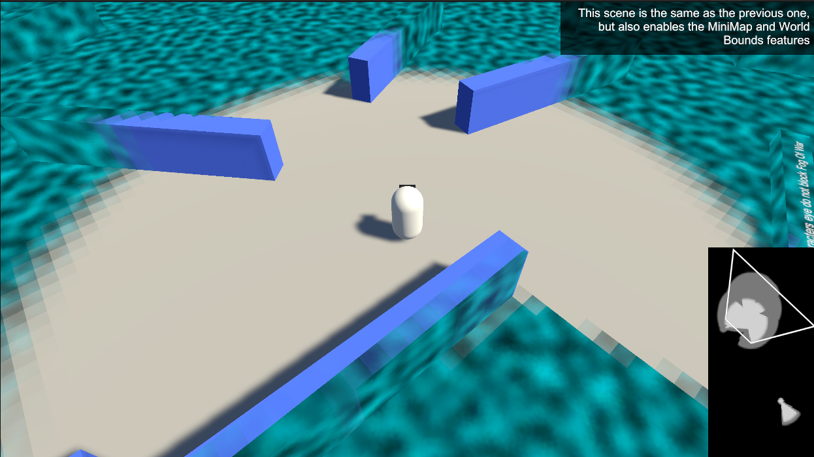

Features
Pixel-Perfect Fog Of War combines sharp, resolution-independent rendering with a deep set of customization and gameplay features.

Fog Sample Modes
Pixel-Perfect (per-pixel, unlimited world size), Texture Storage (enables regrow/memory), or Both.
Fog Appearance
Render the fog as Solid Color, Grayscale, Blur, Texture, or Outline — with tinting and more.
Hard & Soft Fog
Crisp hard edges, or soft gradient edges with adjustable blur distance.
Pixelation & Dithering
Give the fog a retro, pixelated look in world space or screen space, with optional dithered edges.
World Bounds
Render everything outside a defined world boundary as solid black.
Fog Regrow & Fading
Let explored areas fade back into fog over time, and fade revealer vision in and out. (Texture Storage mode.)
Partial Hiders
Shader-based hiders that fade out per-pixel at the fog edge — no component required.
Minimap Generation
Generate a fog texture you can draw over a UI map to visualize explored areas and line of sight, with optional unit-tracking icons.
Saving & Loading
Save explored fog state to a byte array and restore it later.